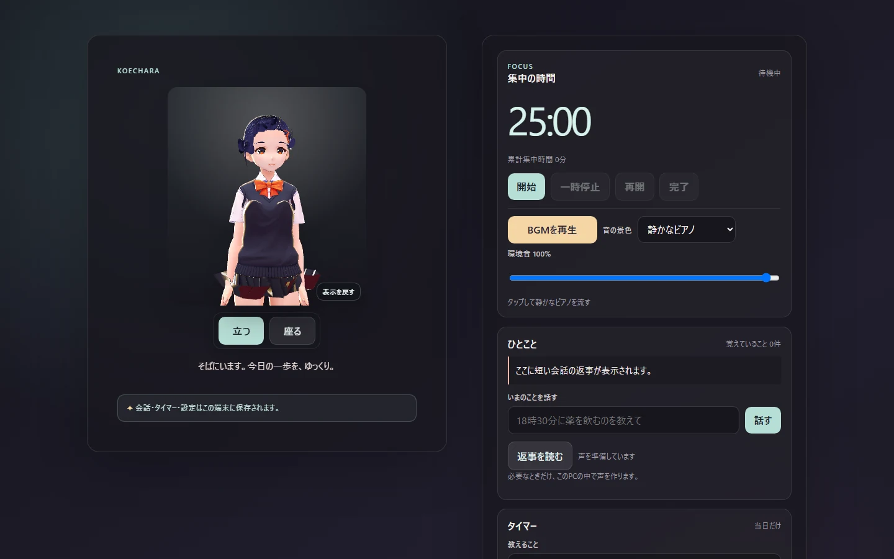

「眺める」と「使う」、どちらが主役？
キャラクターの姿や仕草を楽しむのが目的なら、見た目と動きが重要です。作業中に短く話したい、集中時間を計りたい場合は、デスクトップの道具として使える機能も確認しましょう。
3Dキャラクターを画面に置きたい。でも、眺めるだけでいいのか、会話やタイマーも使いたいのかで、選ぶアプリは変わります。Windows向けデスクトップマスコットを選ぶときに、購入前に確認したいことを整理しました。

キャラクターの姿や仕草を楽しむのが目的なら、見た目と動きが重要です。作業中に短く話したい、集中時間を計りたい場合は、デスクトップの道具として使える機能も確認しましょう。
ウィンドウ内で動くのか、パネルを閉じてデスクトップ上に置けるのかは異なります。KoecharaのDesktop modeでは立つ・座るを切り替え、ときどき画面の下端を歩きます。
会話機能を使うなら、入力がどこに保存されるかを確認。Koecharaは会話・記憶・当日タイマーなどの個人データを基本的に同じPC内に置くLocal-first設計です。
好きなキャラクターを追加購入する方式と、手持ちの3Dモデルを読み込む方式は別です。Koecharaの現行版では、ローカルのVRMを1つ読み込んで標準キャラクターと置き換えられます。
Windows以外で使えるか、必要なPC性能、買い切りか追加購入があるかを確認しましょう。Koechara 1.0の販売対象はWindows x64、発売記念価格は1,280円（税込）です。詳細なCPU・RAM要件は製品ページで順次案内します。
たとえばDesktop Mateは、公式サイトで多様なキャラクターと追加コンテンツを紹介しています。Koecharaはキャラクターの存在に、短い会話・集中タイマー・朗読などを組み合わせます。どちらが優れているという比較ではなく、用途に合うかで選ぶための違いです。
好みのキャラクター、演出、配信プラットフォーム、DLCの条件を確認。Desktop Mateの製品と対応環境については、開発元の公式案内（新しいタブ）が出典です。
Koecharaには短い会話・集中/休憩タイマー・当日リマインド・朗読・BGMがあります。自律発話は明示的にONにしたときだけ有効です。機能一覧と制限を確認できます。
確認日：2026年10月26日。各製品の対応環境・価格・DLC・機能は変更されます。比較先の未記載機能が「ない」ことを意味しません。購入前には各公式ページの最新情報をご確認ください。
Koecharaを選ぶ場合は、公開済みのWindows版実画面、Desktop modeの立つ・座る、プライバシー、VRMの読み込み、価格、対応OSを公式ページで確認できます。実画面の静止画像は、連続動作の録画を意味しません。